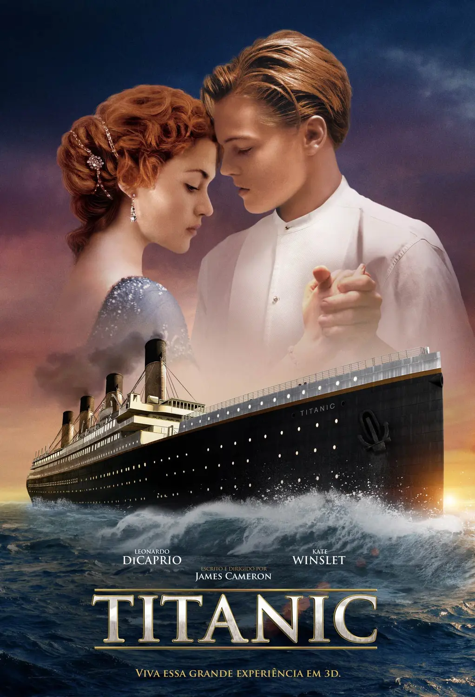
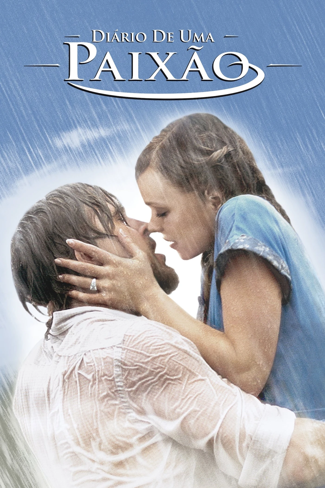
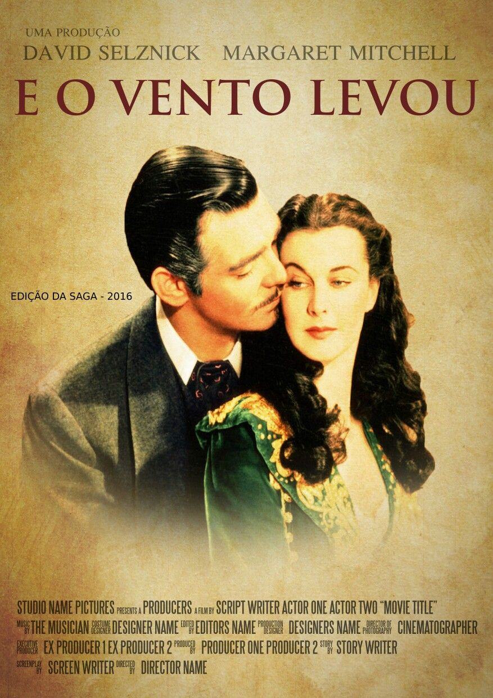
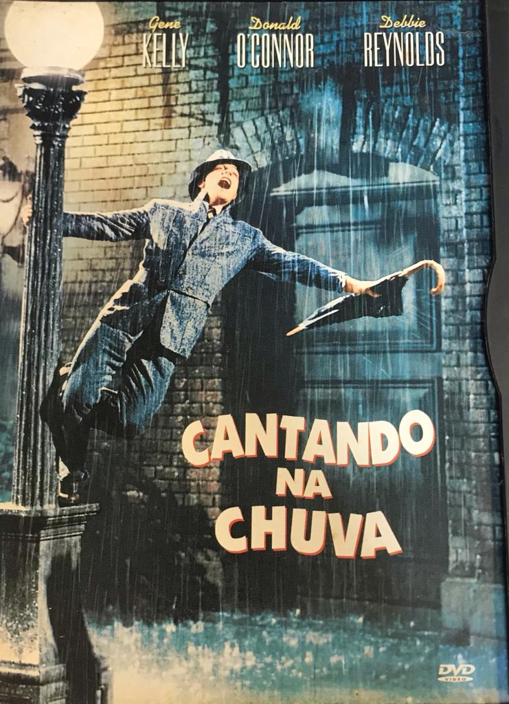
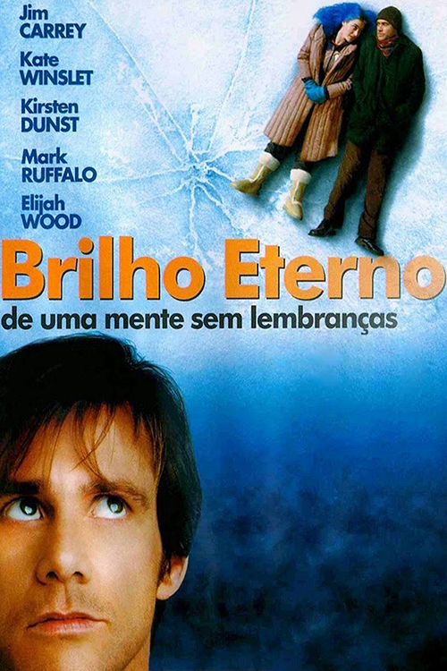

- Titanic  Sinopse
- Diário de uma Paixão  Sinopse
- ...E o Vento Levou  Sinopse
- Cantando na Chuva  Sinopse
- Brilho Eterno de uma Mente sem Lembranças  Sinopse
Um artista pobre e uma jovem rica se conhecem e se apaixonam na fatídica viagem inaugural do Titanic em 1912. Embora esteja noiva do arrogante herdeiro de uma siderúrgica, a jovem desafia sua família e amigos em busca do verdadeiro amor.
Disney+Na década de 1940, na Carolina do Sul, o operário Noah Calhoun e a rica Allie se apaixonam desesperadamente, mas os pais da jovem não aprovam o namoro. Noah é enviado para lutar na Segunda Guerra Mundial, e parece ser o fim do romance. Enquanto isso, Allie se envolve com outro homem. No entanto, a paixão deles ainda não acabou quando Noah retorna para a pequena cidade anos mais tarde, próximo ao casamento de Allie.
Prime video MAXScarlett O'Hara é uma jovem mimada que consegue tudo o que quer. No entanto, algo falta em sua vida: o amor de Ashley Wilkes, um nobre sulista que deve se casar com a sua prima Melanie. Tudo muda quando a Guerra Civil americana explode e Scarlett precisa lutar para sobreviver e manter a fazenda da família.
IndisponivelDon Lockwood e Lina Lamont são dois dos astros mais famosos da época do cinema mudo em Hollywood. Seus filmes são um verdadeiro sucesso e as revistas apostam num relacionamento mais íntimo entre os dois, o que não existe. Porém o cinema falado chega para mudar totalmente a situação de ambos no mundo da fama. Decidido a produzir um filme falado com o casal mais famoso do momento, Don e Lina precisam entretanto superar as dificuldades do novo método para conseguir manter a fama conquistada.
Prime video MAXJoel se surpreende ao saber que seu amor verdadeiro, Clementine, o apagou completamente de sua memória. Ele decide fazer o mesmo, mas muda de ideia. Preso dentro da própria mente enquanto os especialistas se mantêm ocupados em seu apartamento, Joel precisa avisá-los para parar.
Prime video Netflix Telecine